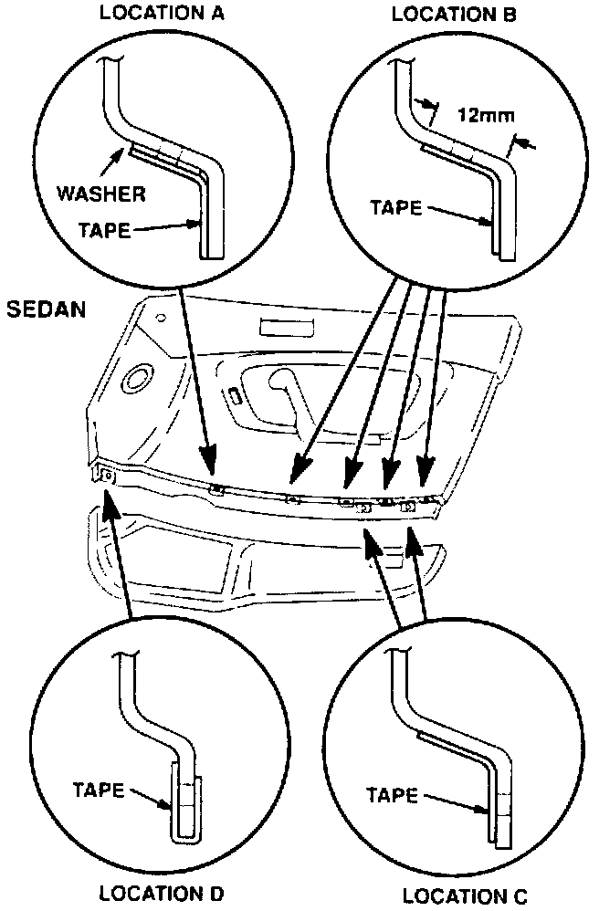
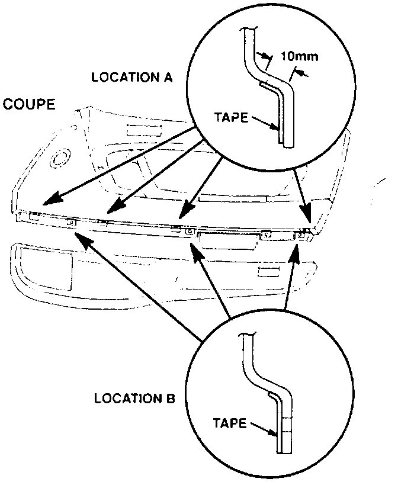

Lower Door Panel - Replacement
July 8, 1991BULLETIN NO
91-036
YEAR
'88-90
MODEL
LEGEND
VIN APPLICATION
ALL
Lower Door Panel Replacement
PROBLEM
The plastic lower door panel cracks near the speaker grille opening.
CORRECTIVE ACTION


Replace only the lower door panel, not the whole door panel assembly.
1. Remove the door panel assembly as described in the Body section of the service manual.
2. Remove the courtesy light, then separate the upper and lower door panels by removing the mounting screws.
3. Apply slip tape (included in the lower door panel kit) to the upper door panel as shown. On a Sedan, add a 4 mm washer (included in the lower door panel kit) under the tape at location A.
4. Perforate the tape at each mounting hole with an awl, then install the new lower door panel. Tighten the mounting screws evenly.
5. Reinstall the courtesy light. then reinstall the door panel assembly.
WARRANTY CLAIM INFORMATION
In warranty:
The normal warranty applies.
Out-of-warranty:
Any repair performed after warranty expiration may be eligible for goodwill consideration by the District Service Manager. You must request consideration, and get the DSM's decision, before starting work.
Operation number: 8431 50 (left front door) 8441 50 (right front door)
Flat rate time: 0.5 hour
Failed P/N: 04675-SD4-664ZZ
Defect code: 017
Contention code: A99